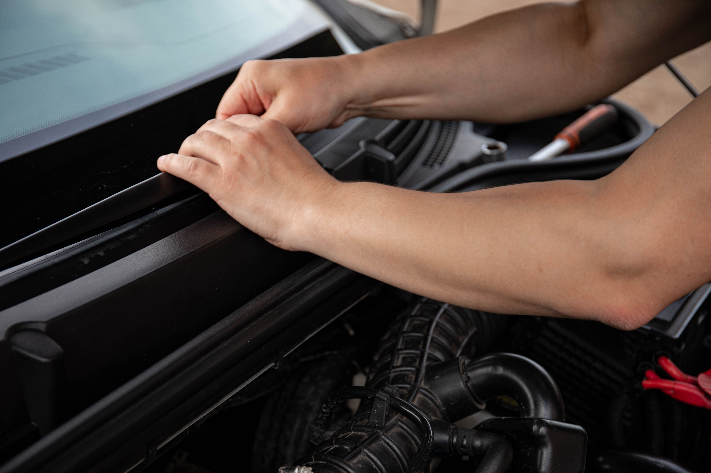

How to Replace Windshield Wipers: Step-by-Step Guide
Replacing windshield wipers is usually a simple job that takes only a few minutes. Lift the wiper arm away from the glass, release the old blade from its connector, attach the correctly sized replacement blade, and gently lower the arm back onto the windshield. Always check the new wiper before driving in rain.

When Should You Replace Windshield Wipers?
Windshield wiper blades gradually wear out from exposure to sunlight, heat, cold, rain, road debris, and repeated contact with the glass. Worn blades can leave streaks, skip across the windshield, or make squeaking and chattering noises.
There is no single replacement interval that works for every vehicle. Many drivers replace their wipers about once or twice a year, but the actual condition of the blade is more important than its age.
Common Signs of Worn Wiper Blades
- Streaks: Water remains in lines or patches after the blade passes over the windshield.
- Skipping: The blade jumps across the glass instead of moving smoothly.
- Chattering: You hear repeated squeaking or vibration while the wipers are operating.
- Cracked Rubber: The wiping edge is visibly cracked, split, or damaged.
- Poor Visibility: The windshield remains difficult to see through during rain even when the washer fluid is adequate.
What You Need Before Starting
The main thing you need is a replacement wiper blade that matches your vehicle. The driver-side and passenger-side blades are often different lengths, and the rear wiper on vehicles equipped with one may use another size and connector.
- Correct Replacement Blade: Check your vehicle owner's manual, the old blade, or the manufacturer's application guide for the correct size.
- Clean Cloth: Useful for wiping dirt from the wiper arm and windshield area.
- Small Towel: Can be placed over the windshield as an extra precaution while changing the blade.
How to Replace Windshield Wipers
1. Park the Vehicle Safely
Park on a level surface, switch the ignition off, and make sure the windshield wipers are turned off. If possible, position the wipers in their normal parked position before lifting the arms.
2. Lift the Wiper Arm Away From the Windshield
Carefully lift the wiper arm away from the glass until it stays in an upright position. Hold the metal arm firmly because it is spring-loaded and can snap back against the windshield if released.
On some vehicles, the wiper arms cannot be lifted normally because the hood or a special arm design interferes with them. In that situation, check the owner's manual for the correct service position.
3. Protect the Windshield
Place a folded towel over the windshield beneath the wiper arm if desired. This provides some protection if the spring-loaded arm accidentally drops while you are working.
4. Remove the Old Wiper Blade
Look at the connection between the wiper blade and the metal arm. Most modern blades use a hook-style connector, push-button connector, side-pin connector, or another locking mechanism.
Release the locking tab or clip and slide the old blade out of the connector. Do not force the mechanism if it does not move. Different wiper systems use different release methods, so the exact motion depends on the vehicle.
5. Compare the New Blade With the Old One
Before installing the replacement, compare its length and connector with the old blade. This is a simple way to catch an incorrect size or adapter before the old blade has been discarded.
6. Install the New Wiper Blade
Align the new blade with the wiper arm connector and slide or press it into position according to the connector design. Continue until the locking tab or mechanism clicks securely into place.
Gently pull on the blade to make sure it is locked onto the arm. It should not easily slide out or separate from the connector.
Lower the Wiper Arm Carefully
Hold the wiper arm firmly and carefully lower it back toward the windshield. Do not simply let go of the arm. A metal wiper arm can strike the glass hard enough to chip or crack it.
Repeat the same process for the other front wiper if it also needs replacement. If the vehicle has a rear wiper, follow the manufacturer's instructions because rear blade designs can be different from the front blades.
How to Test New Windshield Wipers
After installation, spray a small amount of windshield washer fluid onto the glass and operate the wipers at a low speed. Watch the entire wiping area and listen for unusual noises.
- Check the Contact: The rubber edge should maintain contact with the windshield across the wiping path.
- Look for Streaks: A properly installed blade should remove most water without leaving large untreated areas.
- Listen for Noise: Excessive squeaking, chattering, or repeated jumping may indicate a problem with the blade, windshield surface, or wiper arm.
- Check the Attachment: Make sure the blade remains securely connected to the wiper arm throughout its movement.
Tips for Longer-Lasting Wiper Blades
- Keep the Windshield Clean: Dirt and road grime can increase wear on the rubber wiping edge.
- Use Washer Fluid: Avoid running dry wipers across a heavily dirty or dry windshield.
- Clear Ice Carefully: Do not use the wipers to break loose frozen ice from the windshield.
- Inspect the Rubber: Check the blade occasionally for cracks, splits, or hardened rubber.
- Clean the Blades: Wiping the rubber edge with a clean, damp cloth can remove accumulated dirt.
Frequently Asked Questions
Many drivers replace windshield wipers about once or twice a year, but the actual condition of the blades matters more than a fixed schedule. Cracking, streaking, skipping, and poor wiping performance are common signs that replacement is needed.
Yes. On many vehicles, replacing a windshield wiper blade is a simple maintenance task that can be completed in a few minutes. The exact connector and removal procedure vary by vehicle.
Not always. Many vehicles use different blade lengths on the driver and passenger sides. Check the owner's manual or a reliable vehicle-specific application guide before purchasing replacements.
Streaking can be caused by dirt or residue on the windshield, an incorrectly installed blade, a damaged wiper arm, or a defective or unsuitable replacement blade. Cleaning the windshield and checking the blade installation can help identify the problem.